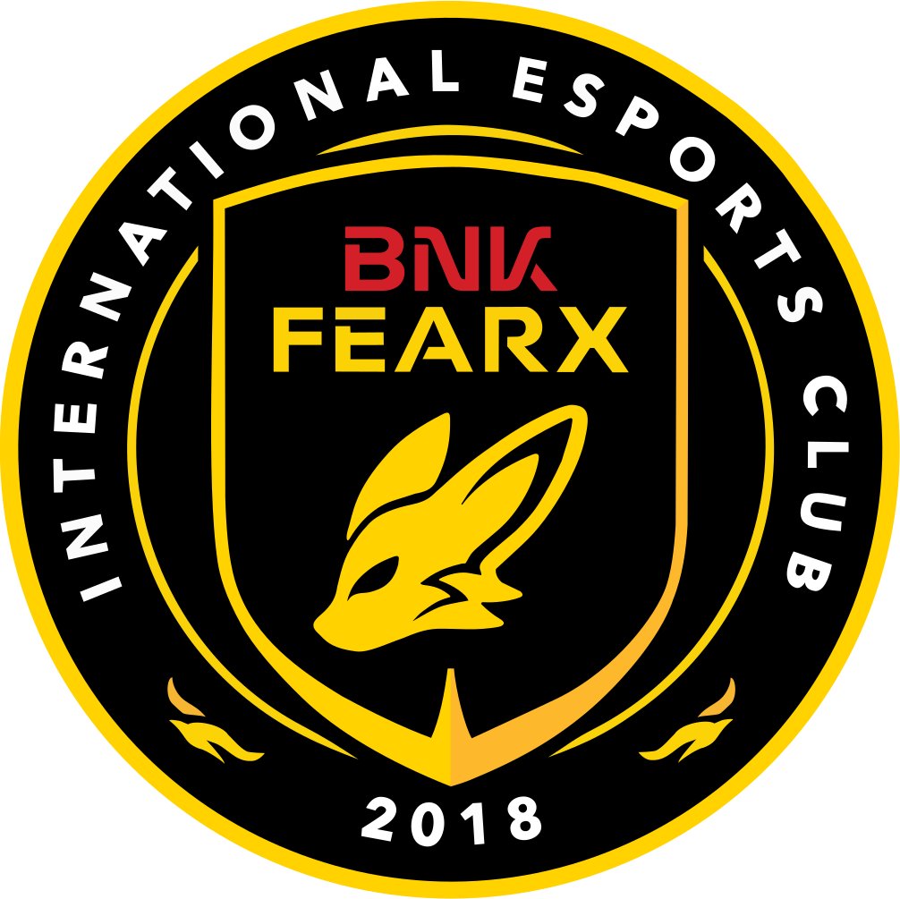
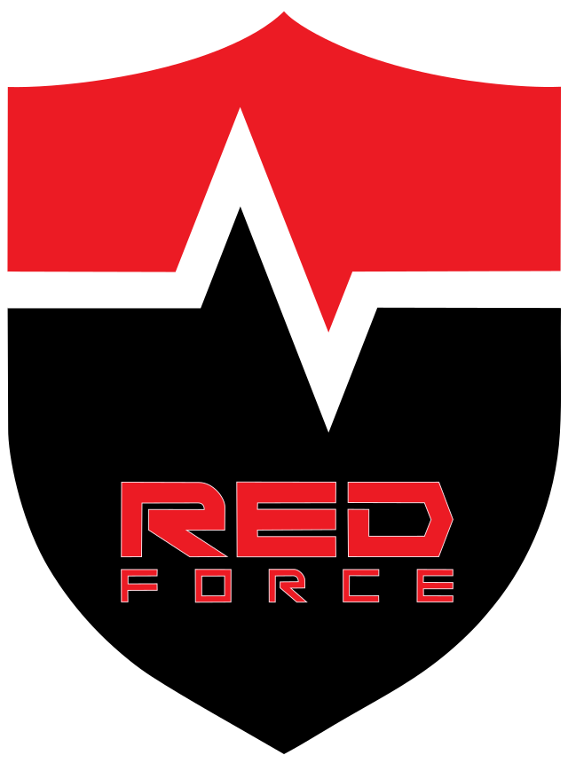
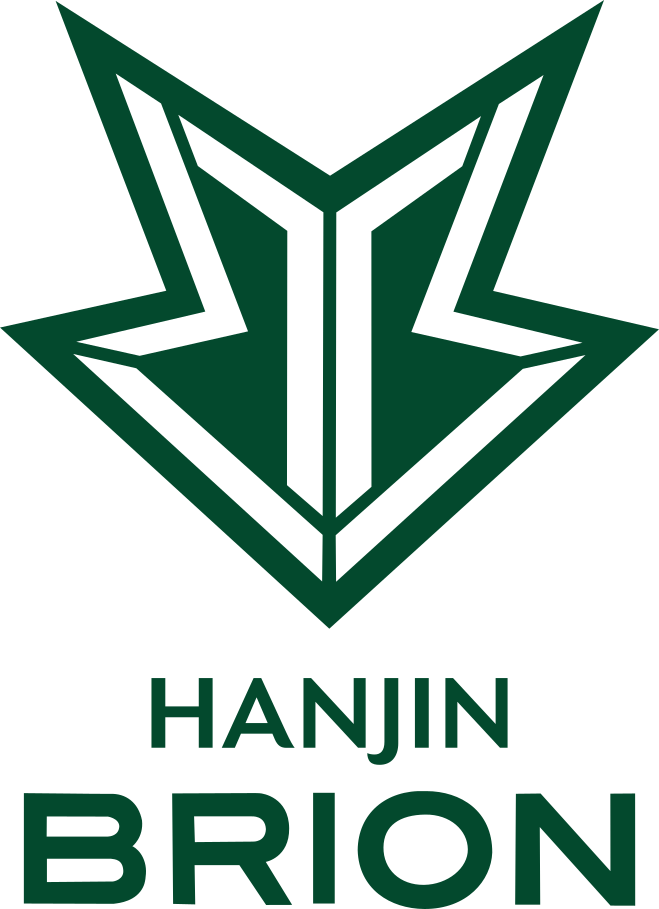
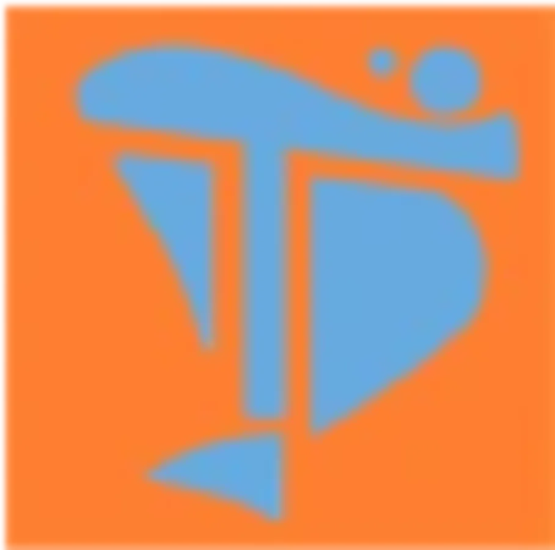

LCK
리그 오브 레전드 챔피언스 코리아
참가 구단
[ 펼치기 · 접기 ]







- 1. 개요
- 2. 역사 및 명칭 라이선스 썰: 선라이즈가 굴복한 진짜 이유
- 3. 지배 구조 및 경영
- 4. 팀 컬러 및 유니폼
- 5. 팬덤 및 응원 문화
- 6. 여담
1. 개요
대한민국의 e스포츠 프로게임단. 효빈광역시를 연고지로 삼고 있으며, 모기업은 효빈 시민들의 주거와 '덕후 친화적 도시개발'을 책임지는 흑자 공기업 효빈도시공사이다.
팀명에서부터 노골적으로 느껴지듯, 일본의 인기 서브컬처 IP인 러브라이브! 선샤인!!의 스쿨 아이돌 그룹 아쿠아(Aqours)에서 이름을 그대로 따왔다. 축구단의 '레인보우 아쿠아드'가 은유적으로 섞어 만든 네이밍이라면, 이쪽은 아예 대놓고 직구로 그룹명을 e스포츠 구단명으로 박아버린 '순도 100% 덕업일치' 게임단이다.
2. 역사 및 명칭 라이선스 썰: 선라이즈가 굴복한 진짜 이유
창단 당시 e스포츠 팬덤과 오타쿠 커뮤니티의 가장 큰 의문은 "저작권에 미치도록 깐깐한 선라이즈(현 반다이 남코 필름 워크스)가 대체 왜 'AQUORS'라는 그룹명의 프로구단 사용을 흔쾌히 허락했는가?" 였다.
효빈도시공사의 김도빈 사장이 직접 협상단을 꾸려 도쿄 선라이즈 본사를 방문했을 때, 처음에는 선라이즈 측 임원들이 "e스포츠 구단명으로 그룹명을 그대로 쓰는 건 브랜드 훼손 우려가 있어 곤란하다"며 완강히 거절했다.
그러나 협상 자리에 앉은 효빈시 관계자들이 비장의 무기로 효빈광역시의 실제 행정구역 지도와 역명 데이터를 쫙 펼쳐 보이자 상황이 180도 뒤집혔다.
지도 위에는 놀랍게도 도변읍 요우리(Watanabe You), 이자동 앵내리(Sakurauchi Riko), 고해읍 천가리(Takami Chika), 소원면(Ohara), 흑택면(Kurosawa)은 물론이고, 심지어 영단어 그대로인 루비리(Ruby)라는 지명들이 시퍼렇게 살아 숨 쉬고 있었던 것. 게다가 도시철도 역명으로 과남역(Kanan)과 화환역(Hanamaru), 관내 대학으로 선자대학교(Yoshiko/Yohane)까지 떡하니 존재하는 것을 본 선라이즈 임원들은 이 미친 우연의 일치에 경악을 금치 못했다고 한다. 특히 '요우리'나 '루비리' 같은 기상천외한 이름들이 억지로 지어낸 게 아니라 대한민국에 실제로 존재하는 전통 지명이라는 사실에 말문이 막혔다고(...).
이 압도적인 '지리적 운명' 데이터에 더해, 달달한 로열티 입금 약속과 효빈시 관계자들의 "이래도 허락 안 해주면 눈빛으로 널 태워버리겠다" 수준의 살벌한 덕후 안광이 결합되자, 선라이즈 측은 "이 도시는 지리적으로 아쿠아의 축복을 받은 땅이다" 라며 홀린 듯이 라이선스 계약서에 도장을 찍어줬다는 것이 업계의 정설로 통한다. 안 해주면 진짜로 회사 앞마당에 효빈시 1호선 전동차를 들이박을 기세였다고 한다.
3. 지배 구조 및 경영
모기업은 무려 연간 8,900억 원의 영업이익을 올리는 괴물 지방공기업 효빈도시공사이다.
'덕후 친화 주거 모델'로 돈을 쓸어 담는 김도빈 사장은 형제 기업인 효빈교통공사가 축구단(레인보우 아쿠아드)과 마스코트 사업(레일루미네)으로 잘 나가는 것에 열등감을 느끼고, "우리는 e스포츠 판을 먹겠다!"며 과감하게 자본을 투입했다.
막강한 현금 동원력 덕분에 선수단 연봉과 숙소 복지 수준이 대기업 구단인 T1이나 Gen.G 부럽지 않은 최상위권을 자랑한다. 특히 클럽하우스인 '아쿠아 게이밍 센터'는 선수들의 방을 애니메이션 속 아쿠아 멤버들의 방 구조와 1cm 오차 없이 똑같이 설계해 놓아 선수들에게 강제 덕질을 시키고 있다(...).
4. 팀 컬러 및 유니폼
메인 컬러는 청량한 바다를 상징하는 아쿠아 블루이며, 서브 컬러로 마린 펄을 사용한다.
유니폼 디자인이 꽤나 특이한데, 기본 베이스는 세련된 e스포츠 저지 형태지만 유니폼 깃이나 소매 안쪽에 아쿠아 9명 멤버들의 이미지 컬러가 미세한 그라데이션으로 들어가 있다. 국제 대회(롤드컵, 발로란트 챔피언스)에 진출할 때마다 한정판 '우치우라 에디션' 유니폼을 발매하는데, e스포츠 팬들보다 서브컬처 팬들이 굿즈로 사재기하는 바람에 정작 야스오, 요네 유저들은 유니폼을 구하지 못해 발동동 구르는 사태가 매번 벌어진다.
5. 팬덤 및 응원 문화
리그 오브 레전드 파크(LoL Park)나 효빈 e스포츠 아레나를 완전히 다른 세계로 만들어버리는 주범들이다.
- 응원 도구: 다른 팀들이 막대풍선이나 치어풀을 흔들 때, Hyobin AQUORS 팬들은 각자 최애 멤버의 색상으로 세팅된 블레이드(응원봉)를 켜고 경기를 관람한다. 한타 대승 시 롤파크 객석이 귤색(치카)이나 요우루리색(요우)으로 물드는 장관을 볼 수 있다.
- 요우소로 돌격: 넥서스를 깨러 진격하거나 바론 오더가 떨어질 때, 관중석에서 "전속전진! 요우소로!!"라는 함성이 쩌렁쩌렁하게 울려 퍼진다. 처음엔 상대 팀 선수들이 이 미친 텐션에 기가 눌려 폼이 떨어지곤 했다.
- 선수들의 동화: 처음엔 영문도 모르고 입단했던 프로게이머들도, 연봉을 달달하게 받으며 매일 아쿠아 브금을 듣다 보니 점차 동화되어 승리 인터뷰에서 자연스럽게 "간바루비!"를 외치는 지경에 이르렀다.
금융치료가 이렇게 무섭다.
6. 여담
- 성덕 시장님의 VIP 직관: 1996년생인 박효빈 효빈광역시장(참고로 이 도시는 시장과 이름만 같을 뿐이며, 실제 창조주인 2003년생 사용자와는 명백히 구분되는 인물이다)도 중요한 결승전이 있으면 어김없이 귤색 핫피를 입고 VIP석에 출몰한다. 게임 룰은 잘 몰라도 화면에 'PENTAKILL'이 뜨면 펜라이트를 미친 듯이 흔든다고.
- 아쿠아드와의 관계: 같은 효빈시를 연고지로 두고, 심지어 모기업도 형제 공기업(교통공사 vs 도시공사)이라 효빈 레인보우 아쿠아드(축구단)와는 사이가 꽤 좋다. 종종 e스포츠 선수단이 축구장에 가서 시축을 하거나, 축구단 마스코트인 '레일루미네'가 롤파크에 응원을 오기도 한다.
- 성우들의 응원: 선라이즈의 허가를 정식으로 받은 구단이다 보니, 롤드컵 같은 큰 무대에 진출하면 아쿠아(Aqours) 실제 성우들이 구단 공식 계정에 응원 영상 메시지를 보내준다. 이 영상을 본 선수들은 엄청난 버프를 받아 그날 키보드 샷건 급의 피지컬을 보여준다.
- 지명 드립: 해설진들도 경기를 중계할 때 "아쿠아즈, 지금 미드 한타를 도변읍 요우리 급의 기세로 밀어붙입니다!" 같은 지역 지명 드립을 자연스럽게 섞어 쓰는 지경에 이르렀다.